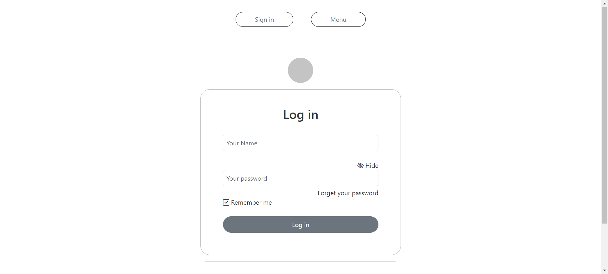

Note de Frais
Application web de gestion des notes de frais professionnelles — Projet BTS SIO SLAM

À propos
NoteDeFrais est une application web développée en PHP permettant aux utilisateurs de gérer leurs notes de frais professionnelles de manière simple et efficace. L'application offre un système d'authentification sécurisé, un formulaire de saisie intuitif, et la capacité à générer des documents PDF récapitulatifs via la librairie dompdf.
Développé dans le cadre du BTS SIO (Services Informatiques aux Organisations), spécialité SLAM — Solutions Logicielles et Applications Métier.
Fonctionnalités
- Inscription et connexion sécurisée avec gestion de sessions PHP
- Saisie de frais : catégorie, date, description, montant HT/TTC, justificatif
- Historique des notes avec filtrage par date, catégorie et montant
- Export PDF dynamique via dompdf (document professionnel formaté)
- Modification et suppression de notes (avec restrictions selon statut)
- Validation des données côté serveur (XSS prevention, SQL injection)
- Page d'impression HTML en format A4
- Profil utilisateur avec modification de mot de passe
Architecture
L'application suit une architecture procédurale PHP avec séparation
des responsabilités entre les pages de traitement et les pages de présentation.
Les mots de passe sont chiffrés avec password_hash() et les requêtes
sont paramétrées pour prévenir les injections SQL.
- Séparation traitement / présentation (DRY)
- Sessions PHP sécurisées avec cookies chiffrés
- Requêtes paramétrées (prévention SQL injection)
- Hachage des mots de passe avec password_hash() / password_verify()
Technologies utilisées
| Composant | Technologie | Version |
|---|---|---|
| Langage backend | PHP | 7.4+ / 8.0+ |
| Base de données | MySQL | 5.7+ / 8.0+ |
| Serveur web | Apache | 2.4+ |
| Frontend | HTML5, CSS3 | — |
| Génération PDF | dompdf | 1.2+ |
| Versionning | Git | — |
Compétences mobilisées
- Développer une application web dynamique avec PHP
- Implémenter un système d'authentification sécurisé
- Gérer des formulaires et valider les données côté serveur
- Manipuler une base de données MySQL
- Générer des documents PDF dynamiques
- Appliquer les bonnes pratiques de sécurité web
- Utiliser Git pour le versioning